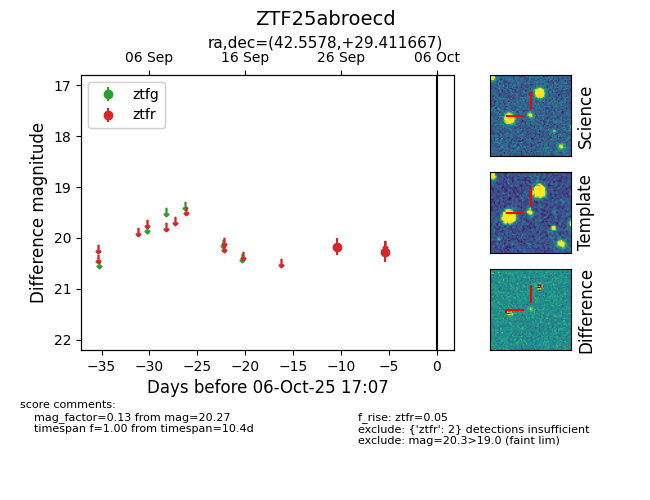

FINK: ZTF25abroecd
Lasair: ZTF25abroecd
ALeRCE: ZTF25abroecd
ZTF25abroecd (ztf,fink)
equatorial (ra, dec) = (42.5578,+29.41167)
galactic (l, b) = (151.8229,-26.71288)

last ztfr=20.27
2 ztfr detections